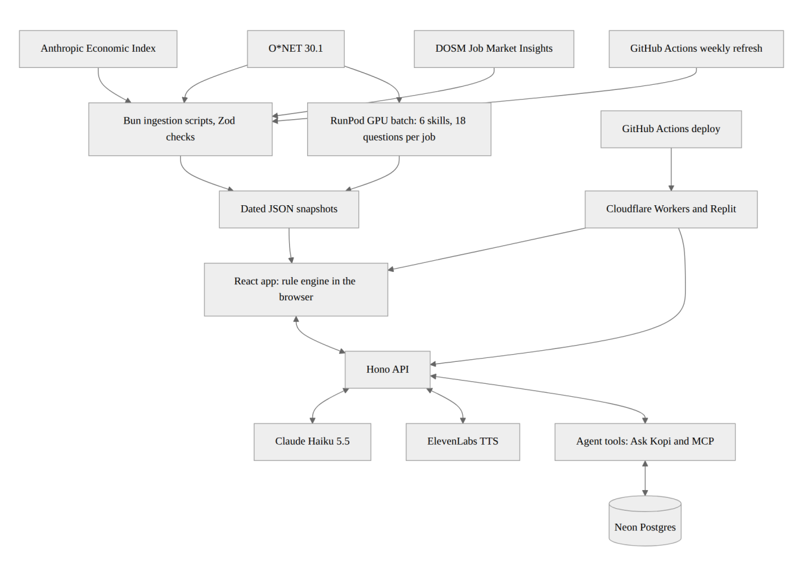

A user opens Kotak in the browser. The React app loads dated JSON snapshots built from O*NET, the Anthropic
Economic Index and DOSM Job Market Insights, and computes every verdict, fit score and roadmap in the browser
with fixed rules. Answers stay in the browser's localStorage.
The app calls a Hono API on the same origin. The API matches typed job titles and writes cited explanations with Claude Haiku 5.5, then checks each explanation against the rules and falls back to a template if it fails. It sends Kopi's lines to ElevenLabs for speech and caches both by request hash. Ask Kopi and the MCP endpoint call 8 read-only tools over the same rules; two read Neon Postgres totals: national skill gaps and reviewed JobStreet ads.
Before the demo, a RunPod GPU ran Qwen3.8-27B to build each job's 6 skills and 18 questions, which ship inside the snapshots.
GitHub Actions builds and deploys the app and API to Cloudflare Workers on every merge to main,
and refreshes the data every Saturday. Replit publishes the same code from the team's account. Keys live only
in GitHub, Cloudflare and Replit secrets.
System block diagram: see Appendix A.
/api/mcpThe pitch video's recording and editing tooling is ported from the team's own earlier hackathon project and lives outside this repository.
The data sources in section 4.2 are downloaded files, not live APIs: the app never calls them at runtime. API keys are not shown in this document.
main on the team's own accountaws-ap-southeast-1, Postgres 18main and the Saturday data refreshclaude-haiku-5-5)eleven_v4 and eleven_v4_turbo, voice JohariNo model is fine-tuned or self-trained.
MyCOL and Epoch AI are cited as context only; Kotak loads no data from them. Approved JobStreet listings feed
the job-title suggestions, the Job Ads in Malaysia card, the role cards' ad counts and pay, and Kopi's
job_market tool, but no verdict, fit score or roadmap.
docs/researchwhisper-1 APIEvery change ran type-checks and a build in CI, and a team member reviewed it before it reached the main branch. The team checked each feature by running the app in a browser at phone and desktop widths, not by trusting the tool's report. Facts in the app and in these documents link a dated public source. AI-drafted skills carry a visible label in the app until a person reviews them. The team owns every merged line and corrected tool mistakes before merging.
main on the team's own accountRunPod was essential to build Kotak's data: it turned O*NET's tasks into 6 skills and 18 questions for each of 923 jobs, which no person could write by the deadline. The batch runs once, so the live app does not depend on RunPod, and the Claude Message Batches API could replace it. Replit hosts the submitted live demo; the same build also runs on Cloudflare Workers, so the hosting is replaceable.
Kotak has no user accounts. A check-up runs in guest mode: the job, goal and answers stay in the browser's
localStorage, and Settings > Reset All clears them.
The app sends a typed job title to the Claude API for matching, and a role's skill data for explanations. Ask Kopi sends the user's message, and the results of tools run on their check-up, to Claude. Kopi's lines go to ElevenLabs for speech. Neither request carries a name, email or ID. The API caches answers and audio by a hash of the request.
Postgres holds the national view as a role code, 6 skill levels, a sample flag and a date, with totals only for groups of 10 or more; no screen sends check-ups, so it holds labelled sample rows. The JobStreet scraper stores public job ads, not personal profiles. Keys live only in host secrets.

Data flows top to bottom: dated public data and the RunPod batch build the snapshots, the browser computes every verdict, and the API adds Claude, ElevenLabs and the agent tools.
Handbook 10.6 asks for proof that Replit was used, showing the team's own account and project. The following
pages show the live deployment at
https://kotak-alaskxntxna.replit.app and the project
https://replit.com/@alaskxntxna/Kotak with its publish and
Git history, from the team leader's account. The same file is
submission/REPLIT PROOF OF USE.pdf in the repository.
Handbook 10.7 asks for a RunPod dashboard screenshot showing the endpoint URL, the GPU type and the runtime,
from the team's own account. The following pages show the serverless endpoint kotak-corners-batch
(https://api.runpod.ai/v2/5yjk19uqmrpbp7) on one NVIDIA H100 80GB GPU, and the batch runtime. The
same file is submission/RUNPOD PROOF OF USE.pdf in the repository.